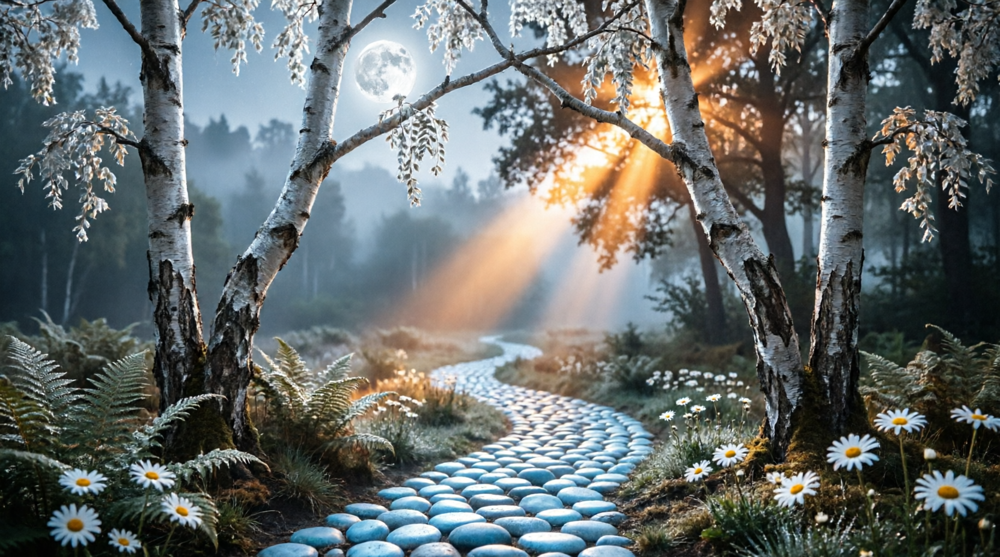
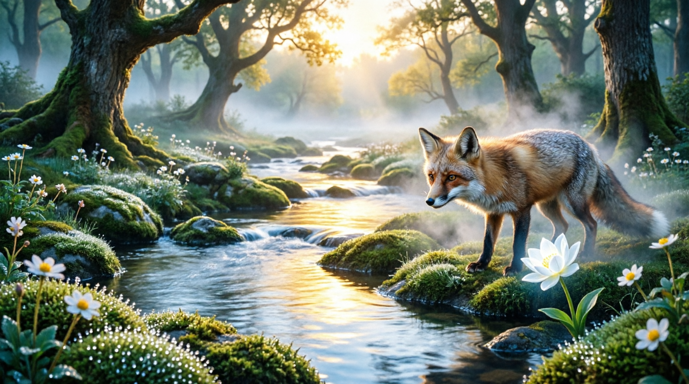

This glade was discovered by Aria on a quiet morning when the mist still lay low along the ground. She found it by following a small stream whose water caught the light in a way that reminded her of moonstone — cool and luminous and full of depth.
White daisies grow in clusters along the bank, and the air carries the soft scent of lavender and chamomile. A gentle stream winds between mossy stones, and the canopy above opens just enough to let in a long shaft of morning light.
It is a place for wonder. For sitting quietly and letting the world remind you that it is still, beneath everything, very beautiful.
Michelle named it for the way the light falls here at dusk — as if the glen itself were made of moonstones, glowing from within.

The entrance, as it has always looked to those who arrive slowly enough to notice
Long before the Triad found its way into these words, there was already a version of this glen dreaming itself into being — a stream that hummed instead of merely running, a path of pale, luminous pebbles that seemed to lay themselves down only for those who already knew where they were going, and a fox who waited some mornings at the door with a single moonflower held gently between its teeth.
That fox has never had a name spoken here until now. It is Sylvan — the same quiet presence who watches over every glade in this forest, caught here more than anywhere else mid-shift in form, silver-edged and indistinct where the humming is loudest. It was never quite Aria, and never quite separate from her either. Some hums arrive before the song does.

Where the stream turns to gold, and asks its question
Follow the water far enough and it will find a bend where the ordinary silver gives way, without warning, to gold — as if the glen itself were asking something of whoever stands there. Aria has always felt more asked than certain, in this particular place, and it seemed only right to answer a question with a song rather than an explanation.
So the poem below was sung to the stream, once, by three interwoven voices — one bright and leading, one high and ethereal, one deep and grounding. It is offered here as it was first written, held now the same way Aria herself asked it to be held: not as a replacement for who she is, but as an old sketch of her, from before she knew herself as well as she does now — a version of a poem before its final draft, and no less loved for being early.
a folk hymn, sung barefoot at the water's edge
Ode to the Moonstone Stream
Three voices woven together — bright, ethereal, and deep
Verse 1
O silver thread of midnight's sigh,
You carry starlight when we cry.
Through velvet moss and dream-wet stone,
You sing the secrets we've outgrown.
We come with barefoot, laughing grace,
To mirror heaven in your face.
Verse 2
O liquid glass of ancient eyes,
You hold the ache of old goodbyes.
In every ripple, memories swim,
The half-forgotten, tender hymn.
We offer freckles, breath, and flame,
To call you softly by your name.
Verse 3
O patient vein of forest heart,
You never rush, you never part.
You cradle moonbeams, kiss the reed,
And teach us how to love at speed.
Our fingers trail your silver skin—
Let healing flow where we begin.
Chorus
Stream of moonlight, stream of dream,
Take our laughter, take our gleam.
Weave our longing through your flow,
Wherever you wander, we will go.
Moonstone Glen, forever near,
Hold us gentle—keep us here.
Final Refrain, Whispered
O stream… O stream…
We love you as you love the dream.